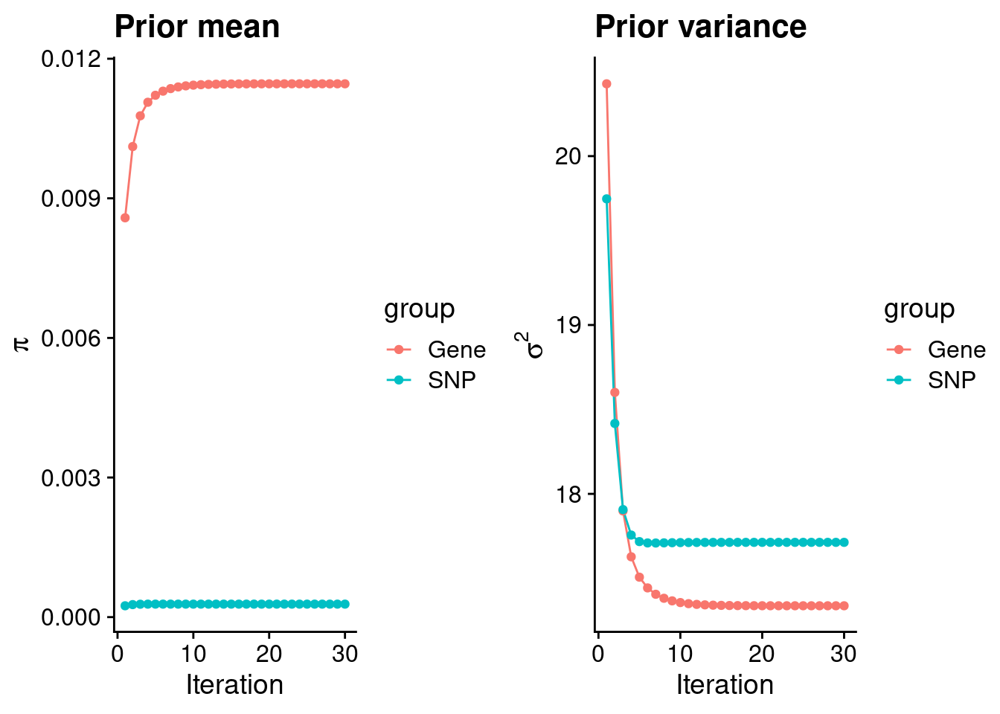
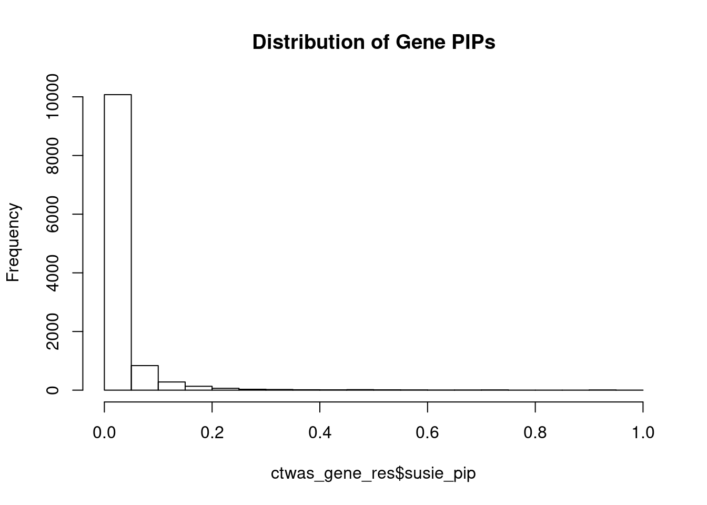
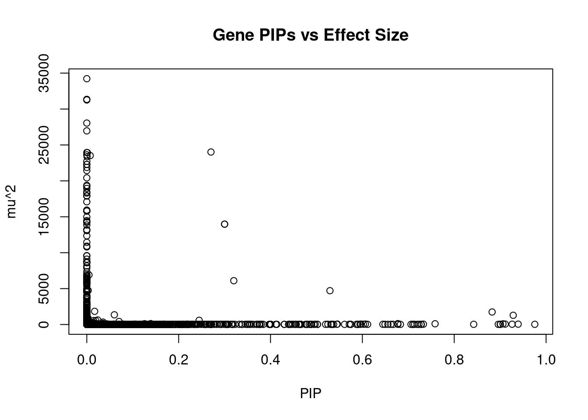
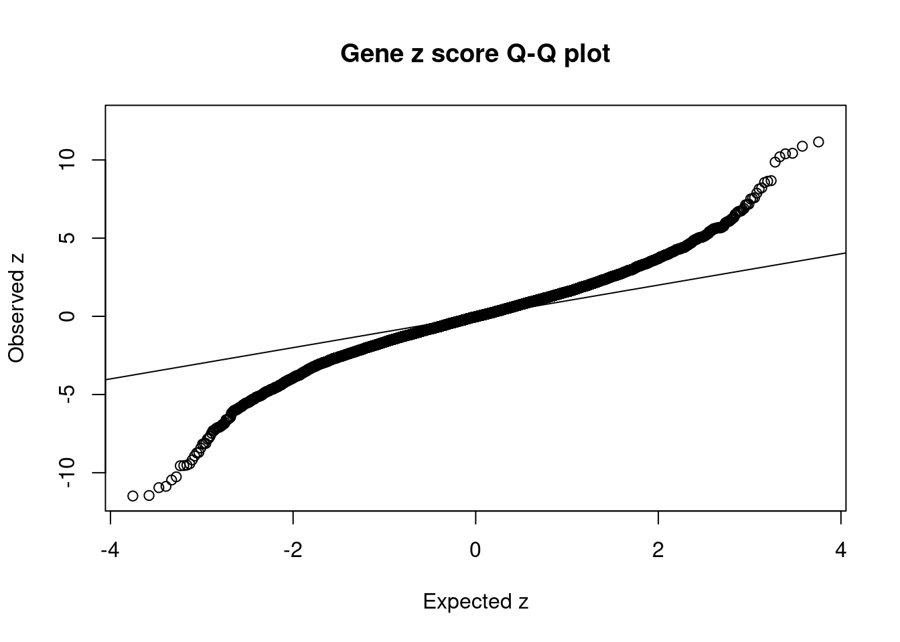
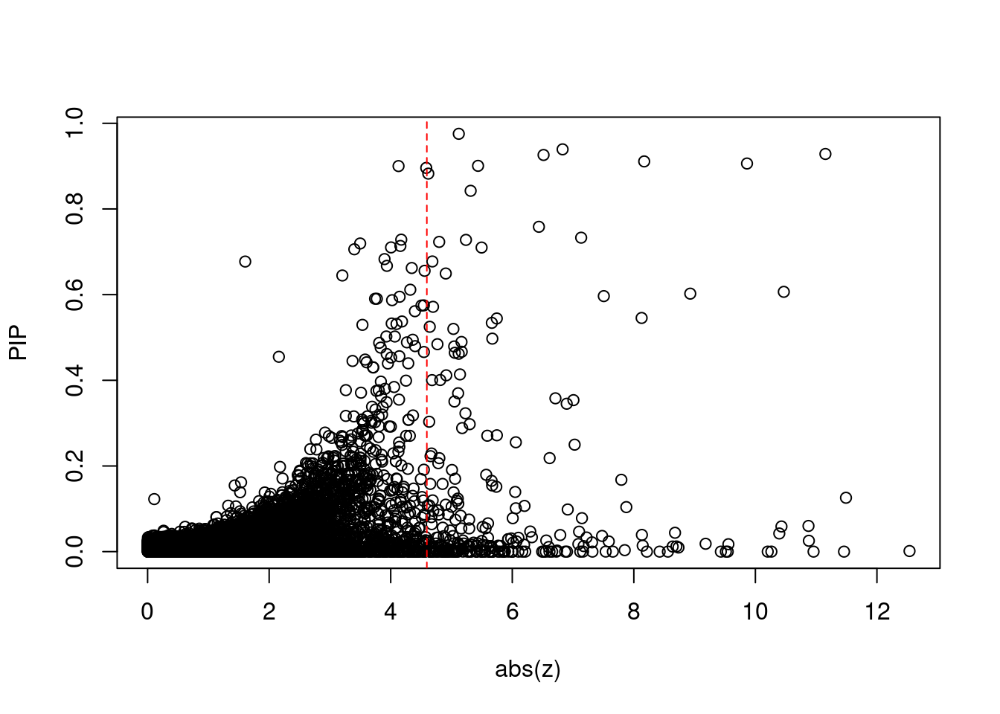
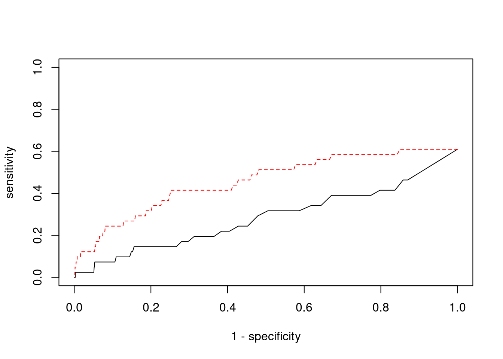

Last updated: 2022-02-13
Checks: 6 1
Knit directory: cTWAS_analysis/
This reproducible R Markdown analysis was created with workflowr (version 1.6.2). The Checks tab describes the reproducibility checks that were applied when the results were created. The Past versions tab lists the development history.
Great! Since the R Markdown file has been committed to the Git repository, you know the exact version of the code that produced these results.
Great job! The global environment was empty. Objects defined in the global environment can affect the analysis in your R Markdown file in unknown ways. For reproduciblity it’s best to always run the code in an empty environment.
The command set.seed(20211220) was run prior to running the code in the R Markdown file. Setting a seed ensures that any results that rely on randomness, e.g. subsampling or permutations, are reproducible.
Great job! Recording the operating system, R version, and package versions is critical for reproducibility.
Nice! There were no cached chunks for this analysis, so you can be confident that you successfully produced the results during this run.
Using absolute paths to the files within your workflowr project makes it difficult for you and others to run your code on a different machine. Change the absolute path(s) below to the suggested relative path(s) to make your code more reproducible.
| absolute | relative |
|---|---|
| /project2/xinhe/shengqian/cTWAS/cTWAS_analysis/data/ | data |
| /project2/xinhe/shengqian/cTWAS/cTWAS_analysis/code/ctwas_config.R | code/ctwas_config.R |
Great! You are using Git for version control. Tracking code development and connecting the code version to the results is critical for reproducibility.
The results in this page were generated with repository version eb13ecf. See the Past versions tab to see a history of the changes made to the R Markdown and HTML files.
Note that you need to be careful to ensure that all relevant files for the analysis have been committed to Git prior to generating the results (you can use wflow_publish or wflow_git_commit). workflowr only checks the R Markdown file, but you know if there are other scripts or data files that it depends on. Below is the status of the Git repository when the results were generated:
Ignored files:
Ignored: .ipynb_checkpoints/
Untracked files:
Untracked: code/.ipynb_checkpoints/
Untracked: code/AF_out/
Untracked: code/BMI_out/
Untracked: code/T2D_out/
Untracked: code/ctwas_config.R
Untracked: code/mapping.R
Untracked: code/out/
Untracked: code/run_AF_analysis.sbatch
Untracked: code/run_AF_analysis.sh
Untracked: code/run_AF_ctwas_rss_LDR.R
Untracked: code/run_BMI_analysis.sbatch
Untracked: code/run_BMI_analysis.sh
Untracked: code/run_BMI_ctwas_rss_LDR.R
Untracked: code/run_T2D_analysis.sbatch
Untracked: code/run_T2D_analysis.sh
Untracked: code/run_T2D_ctwas_rss_LDR.R
Untracked: data/.ipynb_checkpoints/
Untracked: data/AF/
Untracked: data/BMI/
Untracked: data/T2D/
Untracked: data/UKBB/
Untracked: data/UKBB_SNPs_Info.text
Untracked: data/gene_OMIM.txt
Untracked: data/gene_pip_0.8.txt
Untracked: data/mashr_Heart_Atrial_Appendage.db
Untracked: data/summary_known_genes_annotations.xlsx
Untracked: data/untitled.txt
Note that any generated files, e.g. HTML, png, CSS, etc., are not included in this status report because it is ok for generated content to have uncommitted changes.
These are the previous versions of the repository in which changes were made to the R Markdown (analysis/BMI_Brain_Cerebellum.Rmd) and HTML (docs/BMI_Brain_Cerebellum.html) files. If you’ve configured a remote Git repository (see ?wflow_git_remote), click on the hyperlinks in the table below to view the files as they were in that past version.
| File | Version | Author | Date | Message |
|---|---|---|---|---|
| Rmd | eb13ecf | sq-96 | 2022-02-13 | update |
| html | e6bc169 | sq-96 | 2022-02-13 | Build site. |
| Rmd | 87fee8b | sq-96 | 2022-02-13 | update |
[1] 11531
1 2 3 4 5 6 7 8 9 10 11 12 13 14 15 16
1121 807 665 420 560 646 573 430 448 462 693 623 228 380 382 542
17 18 19 20 21 22
704 176 906 343 127 295 [1] 8840[1] 0.7666291
********************************************************Note: As of version 1.0.0, cowplot does not change the default ggplot2 theme anymore. To recover the previous behavior, execute:
theme_set(theme_cowplot())********************************************************
| Version | Author | Date |
|---|---|---|
| e6bc169 | sq-96 | 2022-02-13 |
gene snp
0.0114612037 0.0002790741 gene snp
17.33748 17.71301 [1] 336107[1] 11531 7535010 gene snp
0.006817193 0.110820024 [1] 0.08777756 17.62682168
| Version | Author | Date |
|---|---|---|
| e6bc169 | sq-96 | 2022-02-13 |
genename region_tag susie_pip mu2 PVE z
3434 CCND2 12_4 0.9754463 28.48023 8.265505e-05 -5.119990
983 PIK3C3 18_23 0.9391838 51.83807 1.448511e-04 6.828125
8986 C1QTNF4 11_29 0.9283841 1287.45131 3.556157e-03 11.152141
507 KCNH2 7_93 0.9260291 43.03560 1.185700e-04 6.514694
4444 TRAF3 14_54 0.9110077 60.27067 1.633618e-04 -8.170458
12533 ETV5 3_114 0.9061125 94.53246 2.548505e-04 9.862284
5033 DCAF7 17_37 0.9006528 28.31246 7.586780e-05 5.436897
1797 PPP1R16B 20_23 0.9001065 21.05218 5.637849e-05 -4.128732
8020 CASP7 10_71 0.8958497 24.19811 6.449693e-05 4.584307
9598 ZBTB41 1_98 0.8825101 1744.48636 4.580466e-03 4.618133
6041 ECE2 3_113 0.8423885 29.53188 7.401607e-05 -5.315245
13701 RP11-823E8.3 12_54 0.7583472 102.47935 2.312208e-04 -6.438012
10915 ZKSCAN5 7_61 0.7329540 52.16379 1.137544e-04 7.133466
7609 SERPINI1 3_103 0.7283402 21.22901 4.600304e-05 -4.173167
3223 EDEM3 1_92 0.7278036 28.49638 6.170584e-05 5.237828
13885 PRICKLE4 6_32 0.7231084 23.68968 5.096653e-05 -4.797384
12931 RP11-218E20.3 14_20 0.7194148 21.31974 4.563349e-05 -3.497273
13700 NOL12 22_15 0.7136705 28.47621 6.046477e-05 -4.158975
6995 DYRK1A 21_18 0.7102180 21.11569 4.461895e-05 -4.005566
11862 TEX40 11_36 0.7099352 30.73452 6.491837e-05 -5.495304
num_eqtl
3434 1
983 2
8986 2
507 2
4444 1
12533 1
5033 1
1797 1
8020 1
9598 1
6041 1
13701 1
10915 1
7609 2
3223 1
13885 1
12931 2
13700 1
6995 1
11862 1
| Version | Author | Date |
|---|---|---|
| e6bc169 | sq-96 | 2022-02-13 |
genename region_tag susie_pip mu2 PVE z
135 NADK 1_1 0.000000e+00 34222.51 0.000000e+00 4.858945
9678 STX19 3_59 0.000000e+00 31351.20 0.000000e+00 -5.059656
10427 GSAP 7_49 3.330669e-16 31261.52 3.097876e-17 5.259703
2201 PIK3R2 19_14 0.000000e+00 28046.82 0.000000e+00 5.620989
12651 CTD-3074O7.2 11_37 6.960668e-08 26961.48 5.583637e-09 -4.560522
12665 RP11-757G1.6 11_38 2.703764e-01 24015.26 1.931873e-02 4.314321
5499 MFAP1 15_16 0.000000e+00 23943.73 0.000000e+00 4.302998
11029 MRPL21 11_38 1.278463e-03 23927.47 9.101383e-05 4.378813
4902 HEY2 6_84 0.000000e+00 23615.44 0.000000e+00 3.066031
756 MAPK6 15_21 7.397585e-03 23518.62 5.176359e-04 -4.661687
8147 LEO1 15_21 5.342720e-04 23367.26 3.714435e-05 4.647326
13664 LINC02019 3_35 1.111514e-07 22718.56 7.513084e-09 -4.361776
4212 TMOD2 15_21 0.000000e+00 22290.10 0.000000e+00 4.402599
5505 LYSMD2 15_21 0.000000e+00 22290.10 0.000000e+00 4.402599
1379 WDR76 15_16 0.000000e+00 21870.59 0.000000e+00 4.420440
11904 CKMT1A 15_16 0.000000e+00 21444.58 0.000000e+00 4.129652
3034 CISH 3_35 0.000000e+00 20421.81 0.000000e+00 -3.798838
10708 DPYD 1_60 0.000000e+00 19375.41 0.000000e+00 -2.963185
3033 HEMK1 3_35 0.000000e+00 19267.38 0.000000e+00 -4.681781
13533 U91328.19 6_20 0.000000e+00 18946.90 0.000000e+00 -5.327444
num_eqtl
135 2
9678 1
10427 1
2201 1
12651 2
12665 2
5499 1
11029 1
4902 1
756 1
8147 1
13664 2
4212 1
5505 1
1379 2
11904 1
3034 1
10708 2
3033 1
13533 2 genename region_tag susie_pip mu2 PVE z
12665 RP11-757G1.6 11_38 0.270376414 24015.26131 0.0193187296 4.314321
6352 CELF1 11_29 0.300032757 13975.32342 0.0124753570 -3.558425
2658 PTPMT1 11_29 0.300032757 13975.32342 0.0124753570 -3.558425
276 CPS1 2_124 0.529442940 4711.26810 0.0074212903 -3.534889
6638 PANK1 10_57 0.320040553 6099.69658 0.0058081214 -3.857131
9598 ZBTB41 1_98 0.882510094 1744.48636 0.0045804664 4.618133
8986 C1QTNF4 11_29 0.928384135 1287.45131 0.0035561573 11.152141
756 MAPK6 15_21 0.007397585 23518.62488 0.0005176359 -4.661687
10898 AFAP1 4_9 0.244593919 587.89707 0.0004278282 4.141770
12533 ETV5 3_114 0.906112531 94.53246 0.0002548505 9.862284
11901 VPS52 6_28 0.677229488 124.40308 0.0002506625 1.606101
11712 NDUFS3 11_29 0.059984100 1353.71774 0.0002415943 -10.873568
13701 RP11-823E8.3 12_54 0.758347226 102.47935 0.0002312208 -6.438012
4444 TRAF3 14_54 0.911007692 60.27067 0.0001633618 -8.170458
983 PIK3C3 18_23 0.939183786 51.83807 0.0001448511 6.828125
507 KCNH2 7_93 0.926029131 43.03560 0.0001185700 6.514694
9411 NUPR1 16_23 0.606521428 63.67678 0.0001149078 -10.467590
10915 ZKSCAN5 7_61 0.732954014 52.16379 0.0001137544 7.133466
5638 C18orf8 18_12 0.596520583 56.75826 0.0001007342 7.506065
13896 DHRS11 17_22 0.545530664 61.61665 0.0001000091 -8.128326
num_eqtl
12665 2
6352 1
2658 1
276 1
6638 1
9598 1
8986 2
756 1
10898 2
12533 1
11901 1
11712 1
13701 1
4444 1
983 2
507 2
9411 2
10915 1
5638 2
13896 1 genename region_tag susie_pip mu2 PVE z
34 RBM6 3_35 1.402477e-03 914.63290 3.816498e-06 12.536042
9289 KCTD13 16_24 1.257730e-01 109.37426 4.092843e-05 -11.490673
7735 MST1R 3_35 1.837709e-10 233.55147 1.276973e-13 -11.458475
8986 C1QTNF4 11_29 9.283841e-01 1287.45131 3.556157e-03 11.152141
7729 RNF123 3_35 1.685874e-11 829.59627 4.161159e-14 -10.957103
1860 MAPK3 16_24 2.535695e-02 97.55336 7.359726e-06 10.880016
11712 NDUFS3 11_29 5.998410e-02 1353.71774 2.415943e-04 -10.873568
9411 NUPR1 16_23 6.065214e-01 63.67678 1.149078e-04 -10.467590
12230 NPIPB7 16_23 5.870822e-02 62.11709 1.085007e-05 10.428973
8623 INO80E 16_24 4.238999e-02 86.80742 1.094820e-05 10.393266
10945 C6orf106 6_28 4.877039e-05 118.65415 1.721716e-08 -10.263559
640 UHRF1BP1 6_28 1.556172e-05 97.68565 4.522835e-09 10.203329
12533 ETV5 3_114 9.061125e-01 94.53246 2.548505e-04 9.862284
1952 BCKDK 16_24 1.729060e-02 67.72884 3.484224e-06 -9.555938
7733 CAMKV 3_35 0.000000e+00 1461.85648 0.000000e+00 -9.545115
2608 MTCH2 11_29 3.574918e-14 508.57667 5.409349e-17 -9.514152
10920 FAM180B 11_29 1.743050e-14 504.81784 2.617984e-17 -9.432202
1953 KAT8 16_24 1.835660e-02 63.59798 3.473425e-06 -9.181240
8987 NEGR1 1_46 6.022882e-01 44.67110 8.004855e-05 -8.928461
10248 APOBR 16_23 9.617590e-03 41.37761 1.184006e-06 -8.734610
num_eqtl
34 1
9289 1
7735 2
8986 2
7729 1
1860 1
11712 1
9411 2
12230 1
8623 2
10945 1
640 2
12533 1
1952 2
7733 2
2608 1
10920 1
1953 2
8987 1
10248 1
| Version | Author | Date |
|---|---|---|
| e6bc169 | sq-96 | 2022-02-13 |

| Version | Author | Date |
|---|---|---|
| e6bc169 | sq-96 | 2022-02-13 |
[1] 0.02350186 genename region_tag susie_pip mu2 PVE z
34 RBM6 3_35 1.402477e-03 914.63290 3.816498e-06 12.536042
9289 KCTD13 16_24 1.257730e-01 109.37426 4.092843e-05 -11.490673
7735 MST1R 3_35 1.837709e-10 233.55147 1.276973e-13 -11.458475
8986 C1QTNF4 11_29 9.283841e-01 1287.45131 3.556157e-03 11.152141
7729 RNF123 3_35 1.685874e-11 829.59627 4.161159e-14 -10.957103
1860 MAPK3 16_24 2.535695e-02 97.55336 7.359726e-06 10.880016
11712 NDUFS3 11_29 5.998410e-02 1353.71774 2.415943e-04 -10.873568
9411 NUPR1 16_23 6.065214e-01 63.67678 1.149078e-04 -10.467590
12230 NPIPB7 16_23 5.870822e-02 62.11709 1.085007e-05 10.428973
8623 INO80E 16_24 4.238999e-02 86.80742 1.094820e-05 10.393266
10945 C6orf106 6_28 4.877039e-05 118.65415 1.721716e-08 -10.263559
640 UHRF1BP1 6_28 1.556172e-05 97.68565 4.522835e-09 10.203329
12533 ETV5 3_114 9.061125e-01 94.53246 2.548505e-04 9.862284
1952 BCKDK 16_24 1.729060e-02 67.72884 3.484224e-06 -9.555938
7733 CAMKV 3_35 0.000000e+00 1461.85648 0.000000e+00 -9.545115
2608 MTCH2 11_29 3.574918e-14 508.57667 5.409349e-17 -9.514152
10920 FAM180B 11_29 1.743050e-14 504.81784 2.617984e-17 -9.432202
1953 KAT8 16_24 1.835660e-02 63.59798 3.473425e-06 -9.181240
8987 NEGR1 1_46 6.022882e-01 44.67110 8.004855e-05 -8.928461
10248 APOBR 16_23 9.617590e-03 41.37761 1.184006e-06 -8.734610
num_eqtl
34 1
9289 1
7735 2
8986 2
7729 1
1860 1
11712 1
9411 2
12230 1
8623 2
10945 1
640 2
12533 1
1952 2
7733 2
2608 1
10920 1
1953 2
8987 1
10248 1[1] 41[1] 25[1] 4.594584[1] 11[1] 271 genename region_tag susie_pip mu2 PVE z num_eqtl
8020 CASP7 10_71 0.8958497 24.19811 6.449693e-05 4.584307 1
1797 PPP1R16B 20_23 0.9001065 21.05218 5.637849e-05 -4.128732 1 ctwas TWAS
0.0000000 0.1219512 ctwas TWAS
0.9990440 0.9768816 ctwas TWAS
0.00000000 0.01845018 
| Version | Author | Date |
|---|---|---|
| e6bc169 | sq-96 | 2022-02-13 |
sessionInfo()R version 3.6.1 (2019-07-05)
Platform: x86_64-pc-linux-gnu (64-bit)
Running under: Scientific Linux 7.4 (Nitrogen)
Matrix products: default
BLAS/LAPACK: /software/openblas-0.2.19-el7-x86_64/lib/libopenblas_haswellp-r0.2.19.so
locale:
[1] LC_CTYPE=en_US.UTF-8 LC_NUMERIC=C
[3] LC_TIME=en_US.UTF-8 LC_COLLATE=en_US.UTF-8
[5] LC_MONETARY=en_US.UTF-8 LC_MESSAGES=en_US.UTF-8
[7] LC_PAPER=en_US.UTF-8 LC_NAME=C
[9] LC_ADDRESS=C LC_TELEPHONE=C
[11] LC_MEASUREMENT=en_US.UTF-8 LC_IDENTIFICATION=C
attached base packages:
[1] stats graphics grDevices utils datasets methods base
other attached packages:
[1] readxl_1.3.1 cowplot_1.0.0 ggplot2_3.3.5 workflowr_1.6.2
loaded via a namespace (and not attached):
[1] tidyselect_1.1.1 xfun_0.29 purrr_0.3.4 colorspace_2.0-2
[5] vctrs_0.3.8 generics_0.1.1 htmltools_0.5.2 yaml_2.2.1
[9] utf8_1.2.2 blob_1.2.2 rlang_0.4.12 jquerylib_0.1.4
[13] later_0.8.0 pillar_1.6.4 glue_1.5.1 withr_2.4.3
[17] DBI_1.1.1 bit64_4.0.5 lifecycle_1.0.1 stringr_1.4.0
[21] cellranger_1.1.0 munsell_0.5.0 gtable_0.3.0 evaluate_0.14
[25] memoise_2.0.1 labeling_0.4.2 knitr_1.36 fastmap_1.1.0
[29] httpuv_1.5.1 fansi_0.5.0 highr_0.9 Rcpp_1.0.7
[33] promises_1.0.1 scales_1.1.1 cachem_1.0.6 farver_2.1.0
[37] fs_1.5.2 bit_4.0.4 digest_0.6.29 stringi_1.7.6
[41] dplyr_1.0.7 rprojroot_2.0.2 grid_3.6.1 tools_3.6.1
[45] magrittr_2.0.1 tibble_3.1.6 RSQLite_2.2.8 crayon_1.4.2
[49] whisker_0.3-2 pkgconfig_2.0.3 ellipsis_0.3.2 data.table_1.14.2
[53] assertthat_0.2.1 rmarkdown_2.11 R6_2.5.1 git2r_0.26.1
[57] compiler_3.6.1